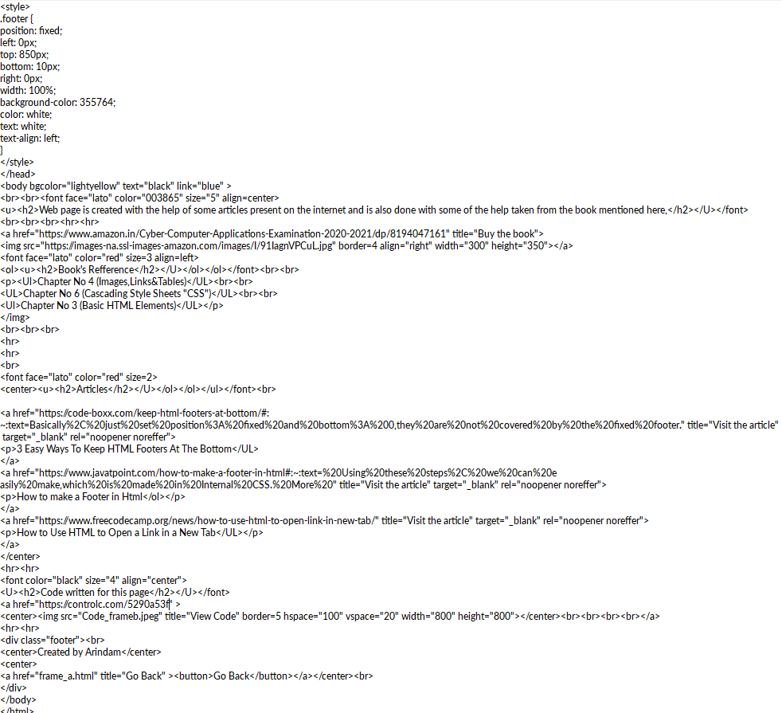

The web page is created with the help of some articles present on the internet and also done with some help taken from the book mentioned here,

Book's Refference
Chapter No 4 (Images,Links&Tables)
Chapter No 6 (Cascading Style Sheets "CSS")
Chapter No 3 (Basic HTML Elements)
Articles
3 Easy Ways To Keep HTML Footers At The Bottom
How to make a Footer in Html
How to Use HTML to Open a Link in a New Tab
Code written for this page
